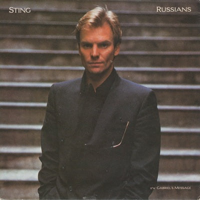

53:18 · 3 OPERE
Tecniche di comunicazione mediatica.
Il filo del discorso
Il contributo analizza il montaggio di un servizio di Good Morning America sulla diffusione della variante Delta e sulle misure sanitarie negli Stati Uniti. Il relatore si concentra sulla successione di percentuali, immagini di produzione dei vaccini, interviste e richieste di nuove restrizioni. Vi legge una costruzione del non vaccinato come responsabile collettivo del disagio altrui.
Leggi la sintesi completaRiduci la sintesi
Il percorso richiama Freud e Le Bon sulle masse, la canzone Russians di Sting e una vicenda di Stargate sulla riscrittura della memoria. La domanda critica riguarda il modo in cui una notizia rende comprensibili dati e responsabilità, oppure orienta una reazione senza spiegare abbastanza. La scheda conserva questa analisi del linguaggio e ne distingue i limiti. Una percentuale richiede contesto ma non è priva di significato; trenta per cento e trenta milioni non sono quantità intercambiabili. Le infezioni dopo vaccinazione non dimostrano da sole inefficacia, e il fatto che la trasmissione continui non equivale alla assenza di protezione dalla malattia grave. Le accuse di modificazione genetica, le diagnosi rivolte al pubblico e le responsabilità penali attribuite a singole persone non vengono adottate come fatti. Il materiale è collocato nel contesto storico dell’estate 2021.
I libri nel discorso
Psicologia delle masse e analisi dell’Io
Note sul riferimento
Copertina: Einaudi, 2013
Freud, libro sulle masse e analisi dell’Io espliciti.

Psicologia delle folle
Identificazione probabile
Note sul riferimento
Copertina: Apogeo · 2025 · nuova traduzione dell’edizione integrale originale
Immagine autentica dell’opera, controllata visivamente; l’edizione di riferimento non è attribuita al filmato.
Le Bon e la teoria delle masse richiamati nel rapporto con Freud; probabile allusione a Psicologia delle folle, senza titolo pronunciato.

Russians
Note sul riferimento
Copertina del singolo musicale Russians,12pollici: Canzone del 1985, in The Dream of the Blue Turtles. La immagine è la copertina del singolo12pollici Russians, con Gabriel’s Message indicato come lato B, nella discografia ufficiale. Non è una copertina libraria, né la nuova registrazione benefica del 2022.
Titolo Russians, nome Sting e lato BGabriel’s Message visibili. Supporto discografico distinto dall’album e dalla versione 2022; nessun ISBN o edizione di libro attribuiti.
Sting e il verso sul fatto che anche i russi amano i figli: canzone Russians identificata, senza riportarne il testo integrale.